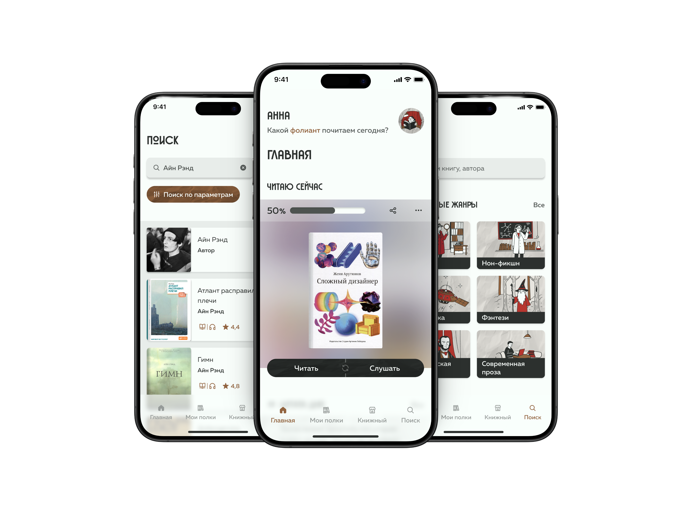
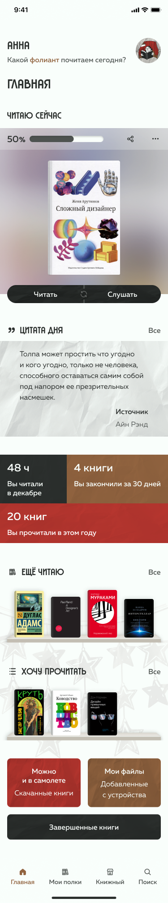
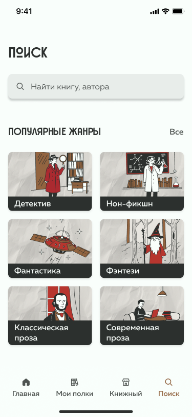
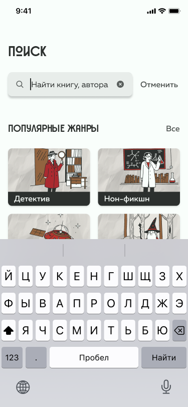
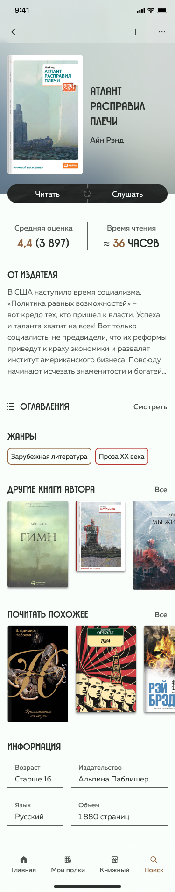
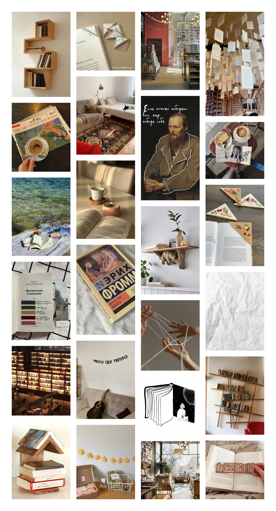
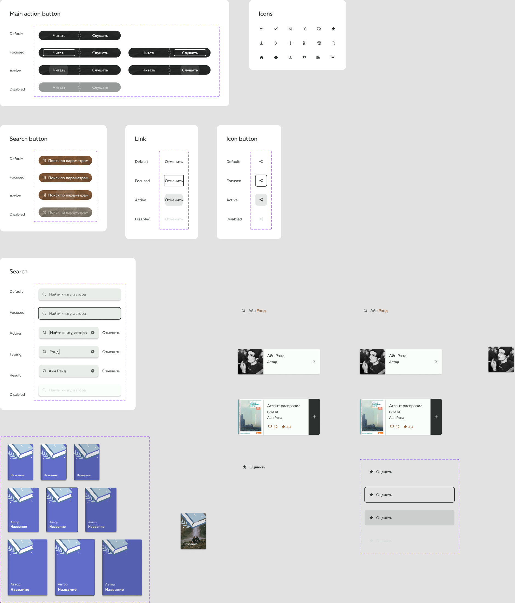

КУРСОВОЙ ПРОЕКТ / 2024
PRODUCT DESIGN UI SYSTEM iOS
ФОЛИАНТ
Тёплое приложение для поиска, чтения и хранения книг



01 / ЗАДАЧА
Сделать цифровое чтение
таким же тёплым, как домашняя библиотека
Курсовая по дизайну мобильных приложений. Я проектировала iOS-продукт с опорой на Human Interface Guidelines и мобильное юзабилити.
БИБЛИОТЕКА
ЧТЕНИЕ
СВОИ ФАЙЛЫ
ПОЛНЫЙ ЦИКЛ ПРОЕКТИРОВАНИЯ — ОТ ЛОГИКИ ПРОДУКТА ДО ВИЗУАЛЬНОЙ СИСТЕМЫ
02 / ПРОЦЕСС
От структуры продукта
к визуальной концепции
Каждый этап снижал неопределённость: анализ сформировал требования, структура связала сценарии, а low-fi позволил проверить переходы до работы с визуалом.
03 / ВЫВОДЫ АНАЛИЗА
Главная должна возвращать
к чтению, а не в бесконечный каталог
| ФУНКЦИЯ | ЯНДЕКС | ЛИТРЕС | APPLE | ФОЛИАНТ |
|---|---|---|---|---|
| Свои файлы | + | — | + | + |
| Поиск по жанрам | + | + | — | + |
| Библиотека открывается первой | — | — | + | + |
ВЫВОД
В основу продукта вошли загрузка собственных файлов, библиотека на главной, поиск по жанрам и параметрам и минимальный визуальный шум.
AI
Использовала для создания части графики и поиска вариантов визуальных образов
04 / АРХИТЕКТУРА
Четыре направления,
собранные в один путь
Структура связывает поиск книг, подробную информацию, чтение и управление личной библиотекой.
Мои полки
Поиск книги
Книжный профиль
Режим чтения
Прогресс и статистика
Жанры и параметры
Страница книги
05 / КЛЮЧЕВЫЕ РЕШЕНИЯ
01 / БИБЛИОТЕКА – ПЕРВАЯ
ДАННЫЕ: людям важно быстро возвращаться к начатым книгам.
РЕШЕНИЕ: личные полки, прогресс и цитата дня открываются сразу.
02 / ПОИСК ОТ ЖАНРА К КНИГЕ
ДАННЫЕ: одного общего поискового поля недостаточно для исследования каталога.
РЕШЕНИЕ: жанры, параметры и результаты поддерживают разные способы выбора.


03 / ЦИФРОВАЯ КНИГА КАК ОБЪЕКТ
ДАННЫЕ: визуальный образ должен поддерживать атмосферу чтения.
РЕШЕНИЕ: обложки, полки и пропорции компонентов напоминают физические книги.
06 / МЕТРИКИ
Проверять не красоту интерфейса,
а возвращение к чтению
Поиск и жанры
Личная библиотека
Страница книги
Чтение и аудио
Загрузка своих файлов
Расширение каталога и социальные механики – следующие итерации.
Open Book
Переход от поиска или библиотеки к чтению.
SEARCH → OPEN
READING TIME
PROGRESS
RETENTION 30
BOOKS FINISHED
NPS И ОТЗЫВЫ
07 / ВИЗУАЛЬНАЯ СИСТЕМА
Уют, собранный
через метод ассоциаций
Книжные полки, дерево, бумага, ковёр, свечи и закладки стали основой тёплой палитры, графики и компонентов. UI-kit собран самостоятельно после разбора Human Interface Guidelines.


AI
Часть графики создана совместно с ИИ и приведена к единому визуальному принципу
08 / РЕЗУЛЬТАТ И РЕФЛЕКСИЯ
Первый масштабный UI-проект
и первая цельная система
Собрала продукт от анализа и архитектуры до визуальной концепции, компонентов и интерактивного прототипа. Проект отметили за визуал и проработку экранов.
Главный результат — научилась не брать визуальные решения из воздуха: каждый образ, цвет и компонент связан с общей идеей продукта.
01 / Успокоила палитру
02 / Точнее настроила типографику
03 / Добавила больше сценариев
04 / Проработала эффекты
Проект защищён перед преподавателями на 5.